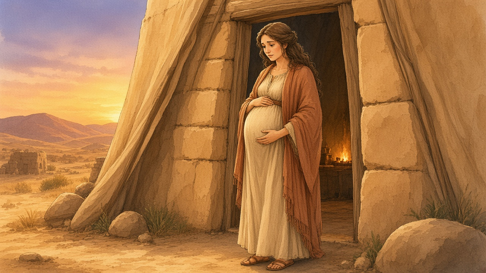
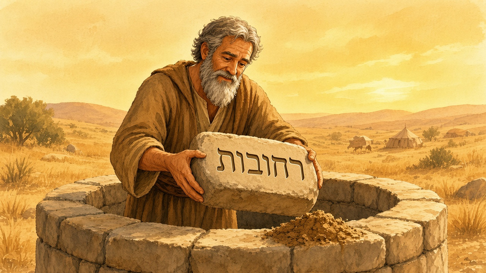
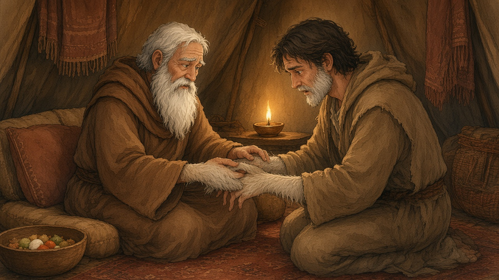

📜 Toldot (תּוֹלְדוֹת): The Oracle She Kept
Shabbat 14 November 2026 · 4 Kislev 5787 · Genesis 25:19–28:9
The boys were already fighting, and they had not even been born.
The portion is called Toldot, generations, as if it were going to be Yitzchak's biography. It opens that way: these are the descendants of Yitzchak, son of Avraham; Avraham fathered Yitzchak. Then the descendants take their time arriving.
Yitzchak had married Rivka when he was forty. For twenty years the household waited. He prayed lenochach ishto — facing his wife, opposite her, as if they were standing on two sides of the same request. God answered him, and Rivka conceived.
Then the pregnancy became a quarrel she could not see.
The boys thrashed inside her so violently that she burst out, "If so, why am I?" The Hebrew is almost a gasp. She went to inquire of God.
The answer was larger than a medical explanation. Two nations were in her womb, two peoples would separate from her body, and one would be stronger than the other. Then came the sentence that could have organised the whole household, if the household had all heard it:
Rav ya'avod tza'ir. The older shall serve the younger.
Rivka heard it. The Torah never says she told Yitzchak, and never says she didn't. Ramban, writing centuries later, thinks she kept it to herself: out of modesty, or because she assumed a prophet did not need her report, or because she feared that Yitzchak, who would come to love the older boy, would refuse to rearrange the future. She wanted, when the time came, a blessing given with an undivided heart.
So the most important line in the family script was spoken to only one of the people who needed it.

Esav arrived first, red and hairy, "like a hairy cloak." Yaakov followed, his hand already gripping his brother's heel, which is how he got his name: the one who holds the akev, the heel, as if the argument about who goes first had started in the birth canal and would not stay there.
Yitzchak was sixty.
They grew into two styles of person. Esav became a hunter, a man of the field. Yaakov was an ish tam, a plain or whole man, dwelling in tents. The Torah does not yet ask us to hiss at one and cheer for the other. It simply records how the house divided its affection: Yitzchak loved Esav, because there was game in his mouth; and Rivka loved Yaakov.
Two parents. Two sons. Two scripts. And between them, a sentence that had never quite made it to the supper table.
One day Esav came in from the field exhausted. Yaakov was cooking. Esav did not even manage the ordinary word for what was in the pot. "Pour into me some of this red, red stuff," he said — ha-adom ha-adom hazeh. Therefore, the Torah adds, they called his name Edom, Red. Did you know — הידעתם — that a whole later nation takes its name from this snack order? A man too hungry to say "lentils" gave Edom its name.
Yaakov said: sell me your birthright, today.
The bechorah was the older brother's future: the first claim, the larger share, the weight of carrying what came next. Esav looked at it through the steam of lunch. "I am going to die. What do I need a birthright for?"
He swore. Yaakov gave him bread and lentil stew.
Then the Torah does something almost funny, and then not funny at all. It lines up five verbs and no further conversation: he ate, he drank, he got up, he left, and Esav despised the birthright.
No speech. No second thoughts on the page. Just a future sold because the present was hungry.
Rashi reads those lentils as funeral food. That day, he says, Avraham died, and Yaakov was cooking the mourner's first meal — round food, because a wheel turns and eventually touches everyone. It is midrash, not a date the Torah supplies. Even without it, the scene is stark enough. The birthright had changed hands over lunch. Yitzchak, who loved the older son, was not in the kitchen to hear that either.
And so the house went on, one secret heavier than before.
While the boys were becoming themselves, Yitzchak was outside, trying to make room.
There was another famine. He started down the family road toward Egypt, the way his father had gone, and God stopped him: do not go down. Stay. Of the three patriarchs, he is the one told to remain in the land. He settled, sowed in a hungry year, and reaped a hundredfold. Then he turned to the wells.
The Philistines had stuffed them with earth after Avraham died, as if blocking a spring could cancel a memory. Yitzchak dug them out again and called them by his father's names. He was not inventing a new map. He was trying to keep an old one usable.
The local herders quarrelled over the first well, so he named it Esek, contention. They quarrelled over the next, so he named it Sitnah, enmity. He moved on and dug a third, and this time nobody fought him for it. He called it Rechovot — Rehoboth, "room."
"Now the Lord has made room for us," he said, "and we shall be fruitful in the land."
It is a hopeful name. It is also, if you look back at the tent, a kind of wish. Out in the dry country Yitzchak was waist-deep in stonework his father had already touched, making space in the ground. Back at home there was less and less space for two sons, two loves, and a prophecy that had never been laid on the table.

Esav married at forty — the same age Yitzchak had been when he married Rivka — and took two Hittite wives. They were, the Torah says bluntly, a bitterness of spirit to Yitzchak and to Rivka. Even the parents who did not share a script could share that disappointment.
Yitzchak grew old. His eyes were too dim to see. Later readers offered reasons: smoke from the incense of Esav's wives; tears the angels shed at the Akedah, the Binding of Yitzchak, falling into his eyes years afterwards; or simply that the eyes dimmed so the blessing could go where it needed to go. The Torah itself says only that he could not see.
He called Esav. Hunt for me, he said. Make me the dish I love, so that my soul can bless you before I die.
He thought, as firstborns' fathers often think, that the future still belonged to the son who had arrived first.
Rivka was listening.
She moved quickly. If Ramban is right, this was the moment the old unshared sentence finally had to act, because talking had been postponed too long. She dressed Yaakov in Esav's clothes, covered his smooth hands and neck with goat skins, and put the food in his hands. Yaakov hesitated. What if his father touched him and he seemed a trickster, and brought a curse on himself instead of a blessing?
"Your curse, my son, be upon me," Rivka said. "Only listen to my voice."
So Yaakov walked into the dim tent and said the line that still makes people wince: "I am Esav, your firstborn."
Yitzchak was not quite fooled. He heard the voice. He asked him to come closer. He felt the goat-skin wrists, and he said the other sentence this portion refuses to let you forget:
"The voice is the voice of Yaakov, but the hands are the hands of Esav."
He blessed him anyway. Dew of heaven, fat of the earth, nations serving him. He smelled the clothes and said his son smelled like a field God had blessed.

Yaakov had barely left when Esav came back with real food, hunted and cooked by the son who had actually been sent. "Let my father get up and eat," he said — rougher, the rabbis notice, than Yaakov's "please get up."
Yitzchak trembled a very great trembling. "Who, then, was the one who hunted, and I ate, and I blessed him? And he shall be blessed."
The future did not get rewritten in the tent.
Esav let out a cry — tze'akah gedolah umarah, a great and bitter cry, one of the rawest sounds in Genesis — and said, "Bless me, me too, my father."
Then the name-pun, sharp with hurt: "Is he not called Yaakov, and he has ya'akveni, supplanted me, these two times? He took my birthright, and look, now he has taken my blessing. Haven't you saved a blessing for me?"
He had not mentioned the birthright to his father before. In Esav's mouth the two thefts were finally one story. Bechorah and berachah almost rhyme. He heard them as a single loss.
Yitzchak could not take back what had already been given. He gave Esav a second, harder blessing: you will live by your sword, serve your brother, and when you grow restless you will shake his yoke off your neck. It was not nothing. It was also not what Esav had come home for.
The man who had once shrugged off a birthright for a bowl of soup now stood in the tent and asked to be seen. The Torah wants you to hear him. It almost never turns the volume up like this.
Later midrash refuses to let that cry vanish. Because Yaakov caused Esav one great and bitter cry, it says, Mordechai will one day cry "a great and bitter cry" in Shushan, in the Book of Esther — almost the same Hebrew, only a letter's difference. God hears the person you hurt, even if the story is "on your side."
Esav decided, in his heart, to wait: when the days of mourning for his father arrived, he would kill his brother. Rivka heard of it. She did what she had done from the beginning — she acted to protect the younger son — and told Yaakov to flee to her brother Laban until Esav's anger cooled. Then she went to Yitzchak with a reason he could share: she did not want Yaakov taking a wife from the local families, as Esav had done.
This time Yitzchak blessed Yaakov openly, and sent him to Paddan-aram for a wife from the family, and gave him Avraham's blessing to take on the road. The thing Rivka had wanted from an undivided heart was finally said in the light. Esav, watching, tried a belated correction and added a daughter of Yishmael to his wives.
Yaakov went out. The house that Yitzchak had tried to widen, well by well, had run out of room for both sons at once. Next week he will be on the road. That is another story.
Back at the beginning, Rivka had asked why she was suffering, and she had been given a sentence instead of comfort. Two nations, and the older shall serve the younger. A whole family lived inside that sentence, but not all of them had been allowed to read it.
The tragedy is not only that someone lied in a tent. It is that a message spoken before birth never became a conversation. Out in the field there had been a well called Room. In the tent, at last, there was only a cry, and a road leading away.